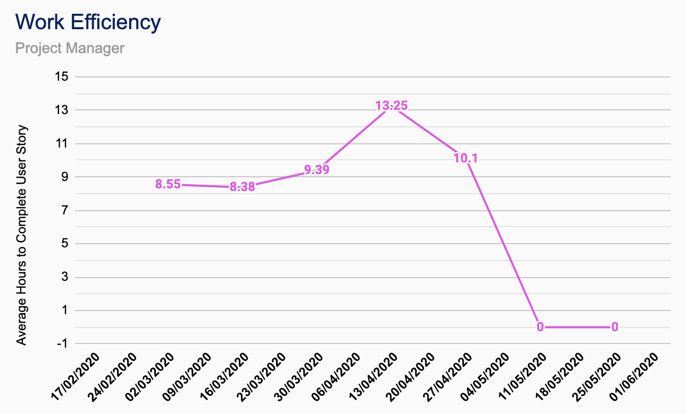
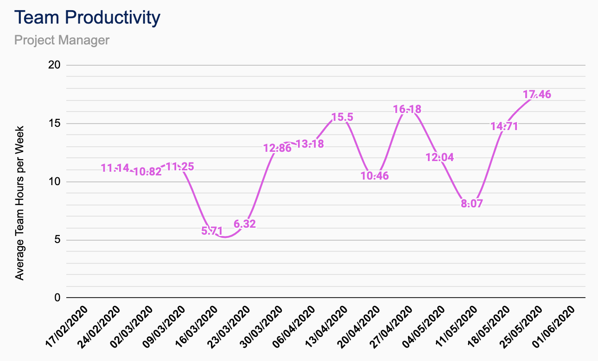
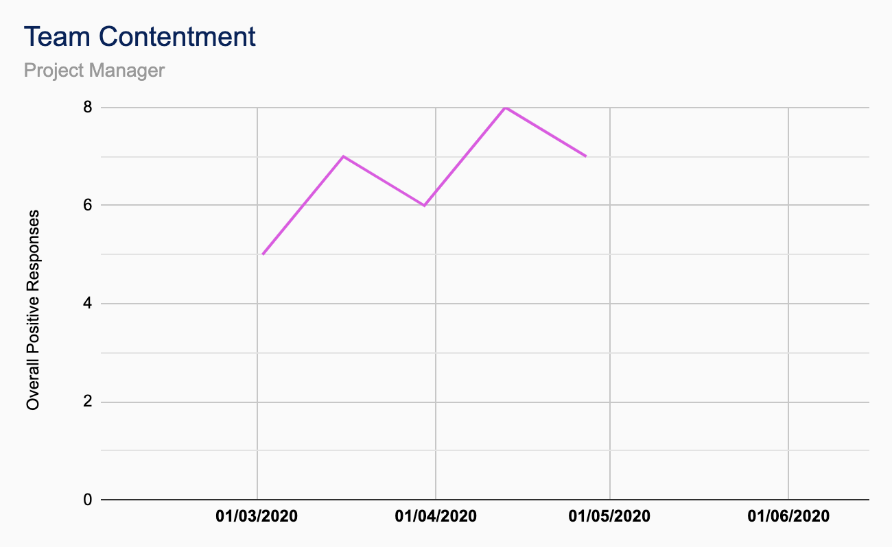
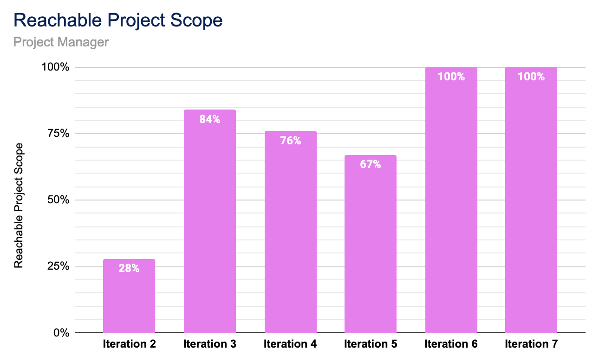

Oliver Still
Project Manager
Joined: Sept. 2019
Related Projects: TutorPoint
Education: MEng Electronic Engineering with Music Technology Systems
As part of CUBIXEL . . .
. . . I'm involved with managing and leading the team to develop and pioneer new tools to be used in the education sector, as well as establishing new business partners for new adventures! I help to link the client's vision to our expert team of developers and software engineers to involve the client in every step of the process as much as we can.
For TutorPoint . . .
. . . I've been responsible for managing and coordinating all members of the TutorPoint software development team around the various project goals and deadlines to ensure clarity amongst the team is present and that the client is happy with the quality presented.
Outside of work . . .
. . . I love to produce music and play the piano to unwind. I’m also passionate about analogue photography and you’ll often find me behind an old film camera. My favourite place to be is the coast.
Favourite programming language?
Java or Swift.
Contributions
| TutorPoint |
|---|
| Client-side Whiteboard Module |
| Server-side Whiteboard Module |
| Login Screen JavaFX CSS Design |
| Main Screen JavaFX CSS Design |
| Profile Screen JavaFX CSS Design |
| Whiteboard JavaFX CSS Design |
| Other |
|---|
| CUBIXEL Trello Setup |
| CUBIXEL GitHub Repository Setup |
| CUBIXEL HTML Website Development |
| CUBIXEL HTML CSS Designs |
TutorPoint Breakdown


QA Metrics
-

Work Efficiency
Total number of hours programming of completed user stories by the software development team divided by the number of user stories completed at the end of a single project iteration. -

Team Productivity
Average working hours of the whole software development team per day at the end of a week every Thursday. -

Team Contentment
Number of overall positive responses in individual feedback from each team member on the management and organisation of the project before each iteration. -

Reachable Project Scope
The overall percentage iteration completion of the assigned user stories at the end of the iteration period.